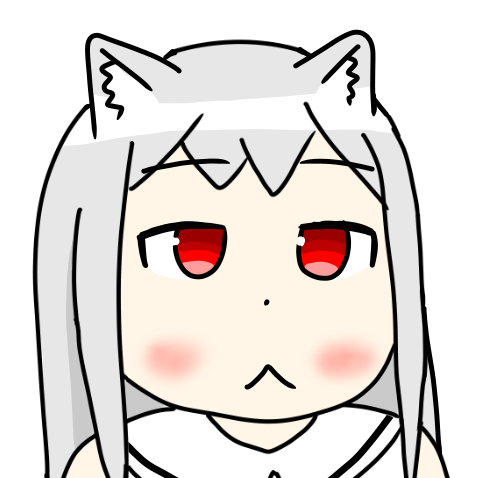

About Me
Twitter
Wordpress
Github
자캐 소개
작업물 모음
Contacts
© 2012 - 2018 @ItsLunaNyan
All rights are reserved for this site & personal projects listed above unless license is specified.
Some rights are reserved and all copyrights belong to their respective owners for co-operation projects listed above unless license is specified.